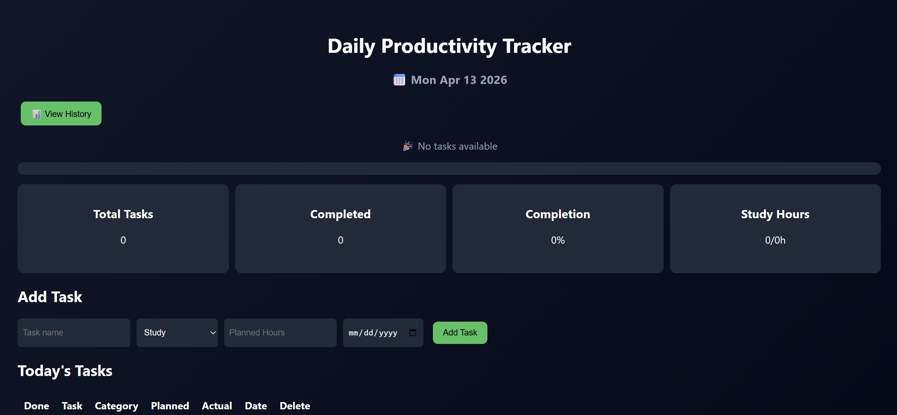
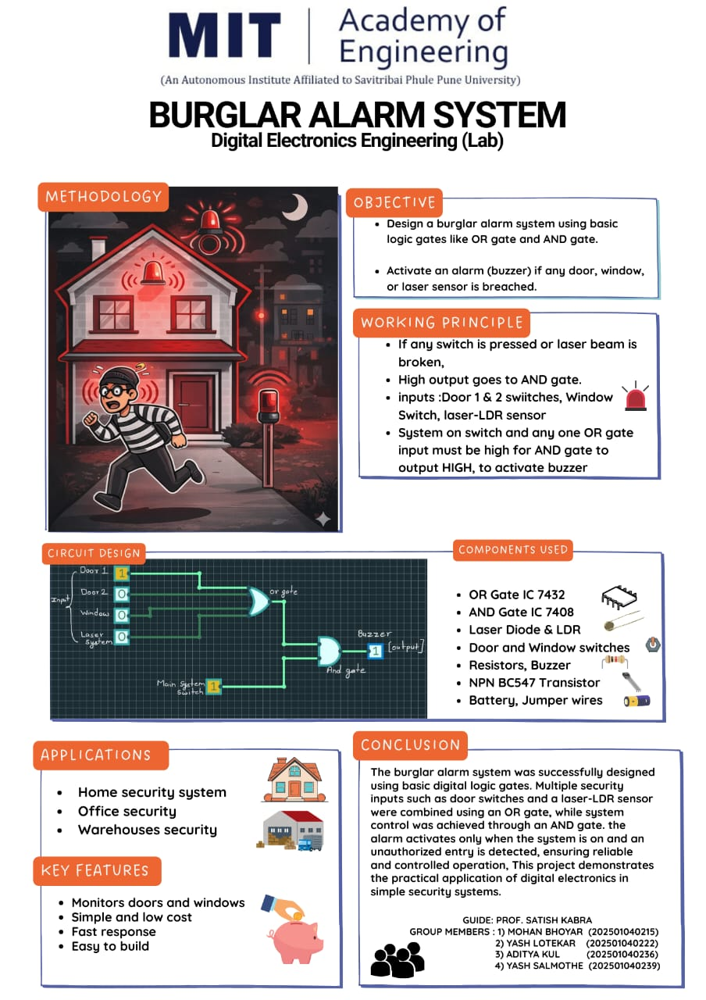
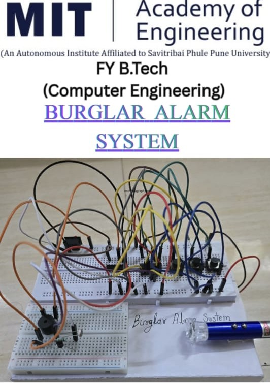
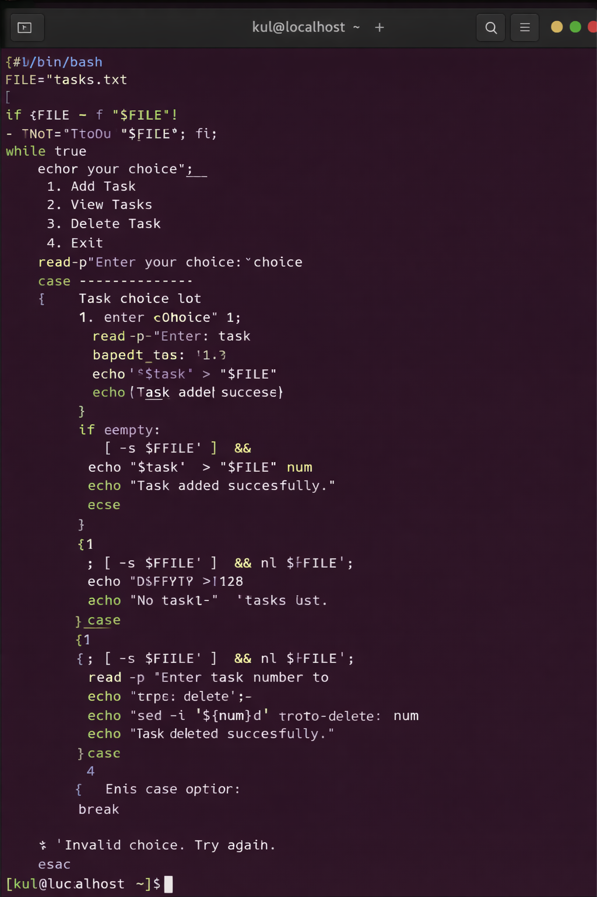
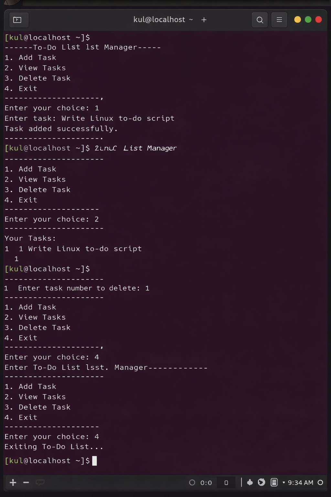

⚒️MY PROJECTS
💡THE PRODUCTIVITY TRACKER
➡️Click the link for Productivity tracker📈 Growth Project – Key Features
- Allows users to add daily tasks/goals to track their progress
- Tasks can be organized in a simple list format for clarity
- Helps in building daily habits and productivity tracking
- Users can mark tasks as completed once done
- Provides a clear view of pending and completed tasks
- Simple and clean interface for easy use without confusion
- Works smoothly on both mobile and desktop devicesbr>
- Focuses on self-growth and consistency improvement
- No login or backend required – fast and lightweight website
- Hosted online, so it can be accessed anytime from anywhere



🔐 BURGLAR ALARM SYSTEM
📌 Project Overview
- Designed a burglar alarm system using basic digital logic gates
- Used OR gate (IC 7432) and AND gate (IC 7408)
- System activates alarm when intrusion is detected
- Inputs include door switches, window switches, and laser sensor
- Used LDR sensor for detecting laser interruption
- Built using basic electronic components and breadboard
- Demonstrates real-life home security application
- Simple, low-cost, and effective system
- Fast response when any sensor is triggered
- Great beginner-level hardware + logic project
🛠 Components Used
- OR Gate IC 7432
- AND Gate IC 7408
- Laser Diode & LDR
- Door & Window Switches
- Resistors & Buzzer
- NPN Transistor (BC547)
- Battery & Jumper Wires


🐧 LINUX TO-DO LIST MANAGER
📌 Project Overview
- Developed a command-line based To-Do List Manager using Linux
- Built using Bash shell scripting
- Allows users to add, view, and delete tasks
- Tasks are stored permanently using a text file
- Menu-driven interface for easy interaction
- Implements file handling in Linux environment
- Uses loop and conditional statements
- Provides numbered task listing for easy management
- Supports task deletion using line numbers
- Simple and efficient terminal-based application
⚙️ Working Principle
- Program runs using Bash shell script
- Displays menu with options (Add, View, Delete, Exit)
- User selects option using keyboard input
- Tasks are stored in "tasks.txt" file
- Uses commands like echo, read, nl, and sed
- Loop runs continuously until user exits
🛠 Technologies Used
- Linux Operating System (Fedora)
- Bash Scripting
- Shell Commands (echo, read, sed, nl)
- Text File Handling

